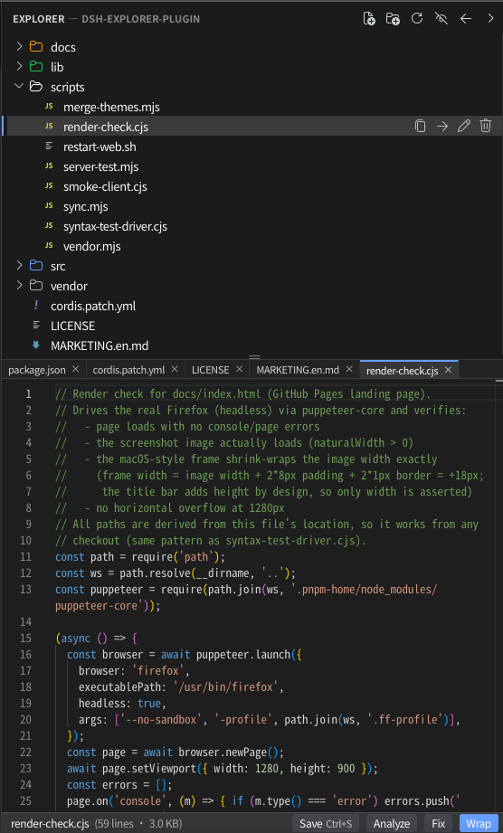

Your agent's workspace, visible and editable.
A VS Code-style file explorer and Monaco editor docked right into the DSH chat. Watch the agent work, then jump in and edit — no round-trip through the LLM.

28
languages highlighted
0
build steps
50 MB
max file size
100%
offline assets
Try it
# 1. (Optional) Re-vendor assets — vendor/ is committed, so a fresh clone # already ships everything; run this only to refresh pinned versions. node scripts/vendor.mjs # 2. Install the plugin into the web profile. # The -w flag is REQUIRED: without it pnpm fails with # ERR_PNPM_ADDING_TO_ROOT (the profile is a pnpm workspace root). dsh plugin --profile web add -w . # from the plugin checkout # or: dsh plugin --profile web add -w /absolute/path/to/dsh-explorer-plugin # 3. Restart the web server (bundles are composed at boot) dsh web
Requires the dsh CLI and pnpm ≥ 8 on your PATH.
Full details in the
README.